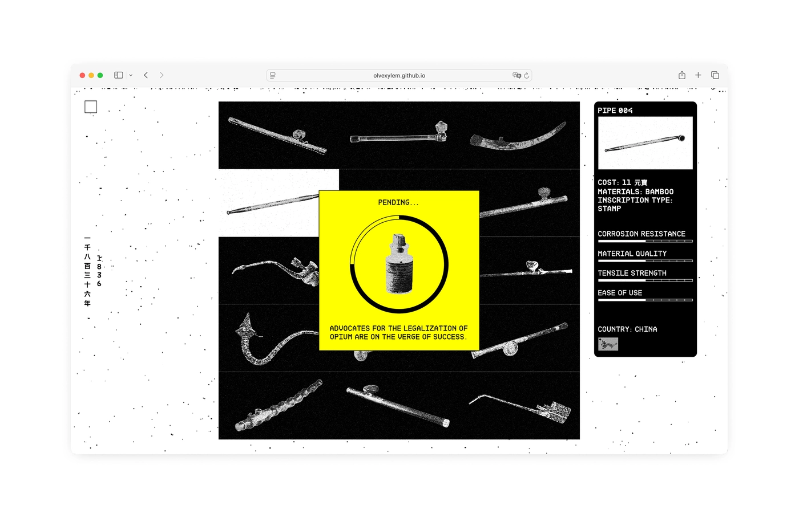
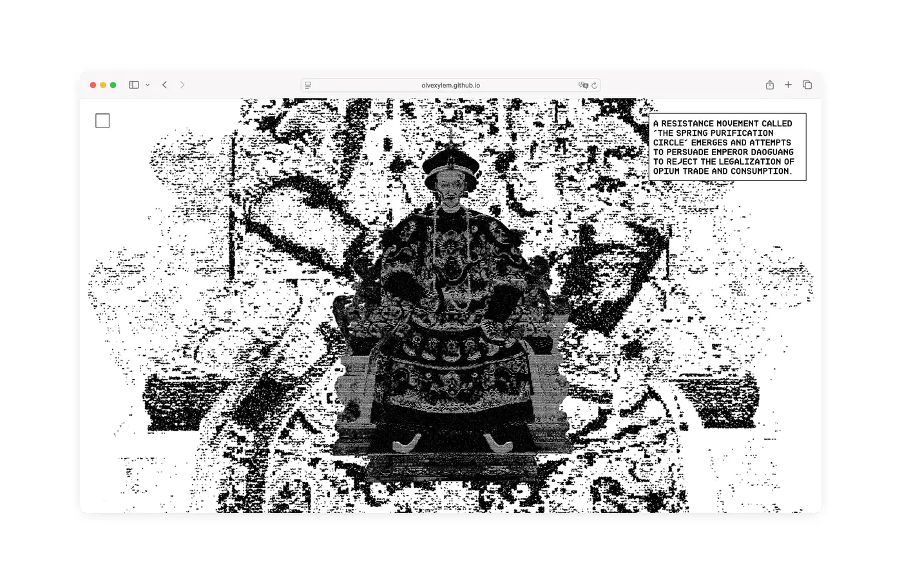
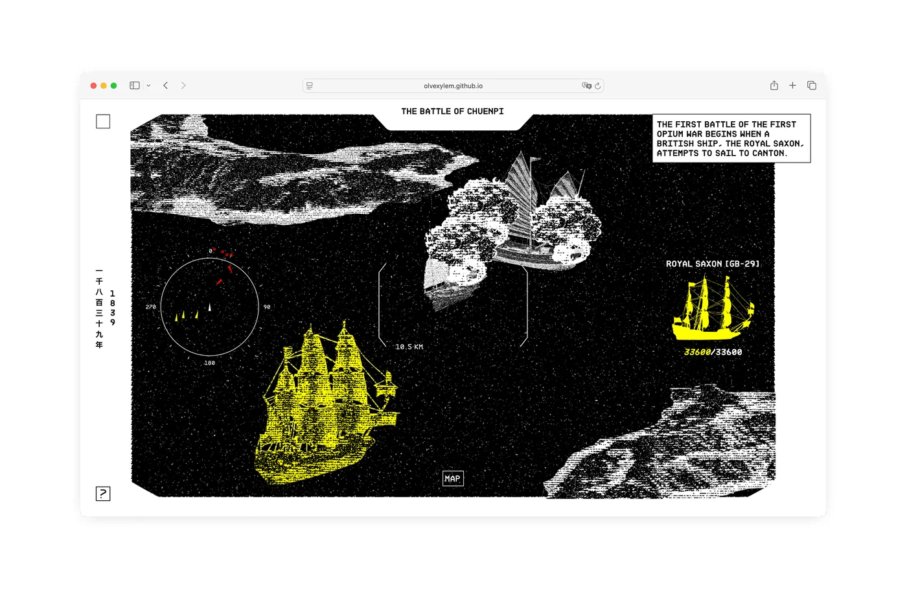
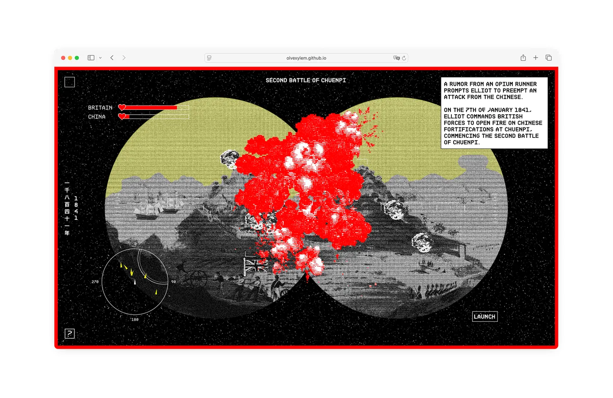
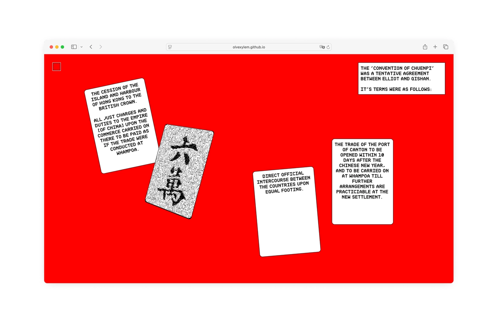
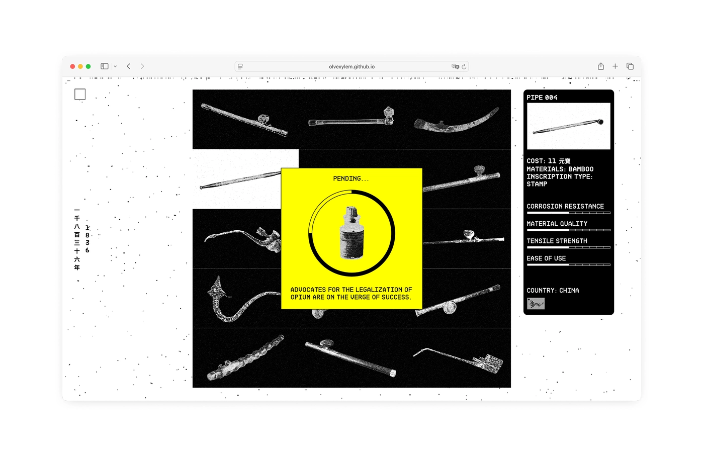
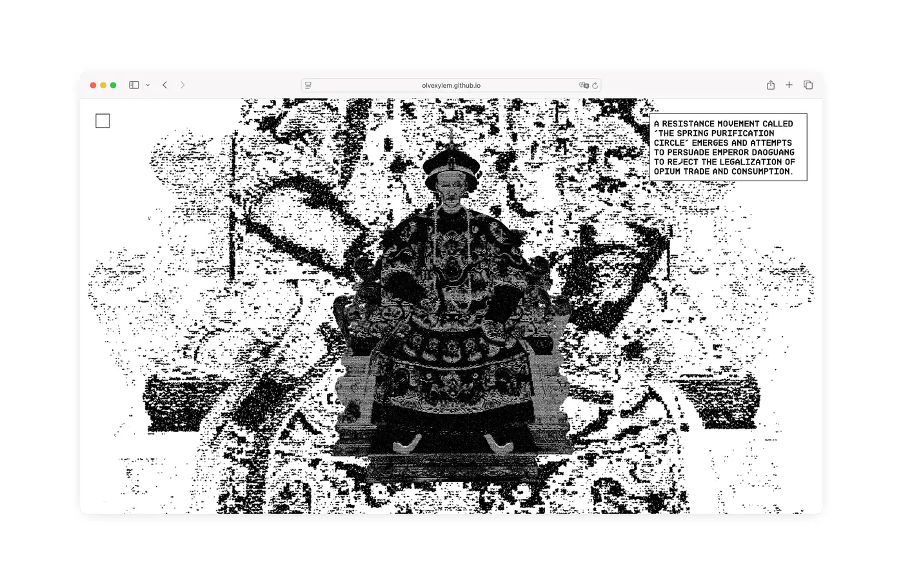
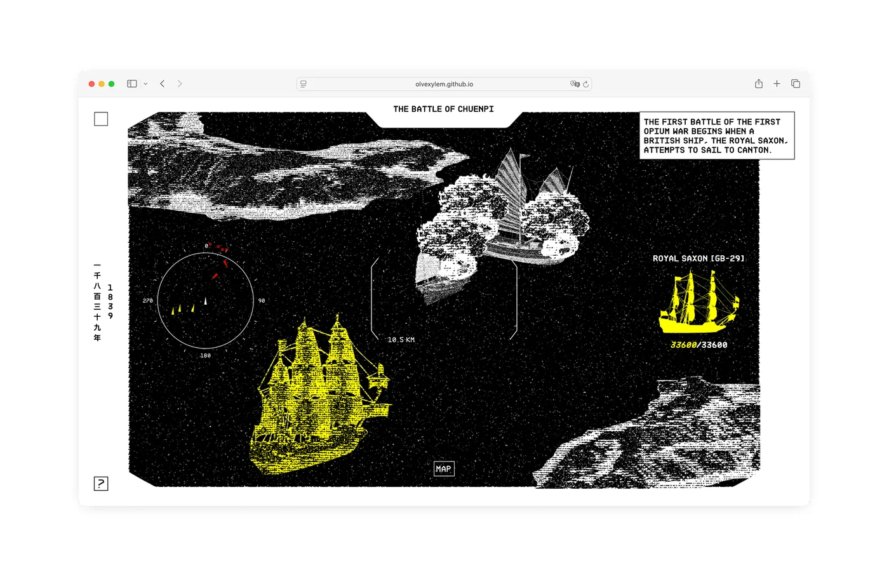
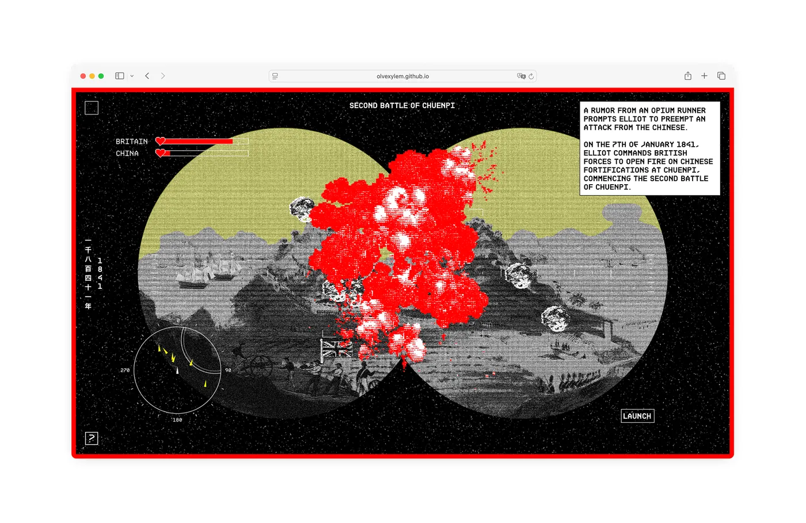
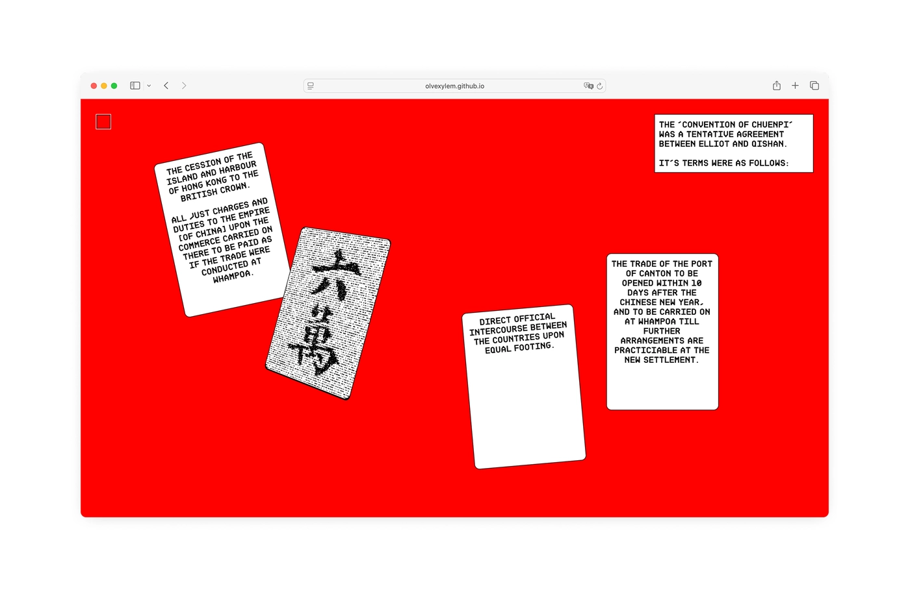
The First Opium War
A digital timeline of the first Opium War fought between China and Great Britain from 1839 to 1842.
Inspired by retro video games from the late 80s and early 90s.
[Read More]
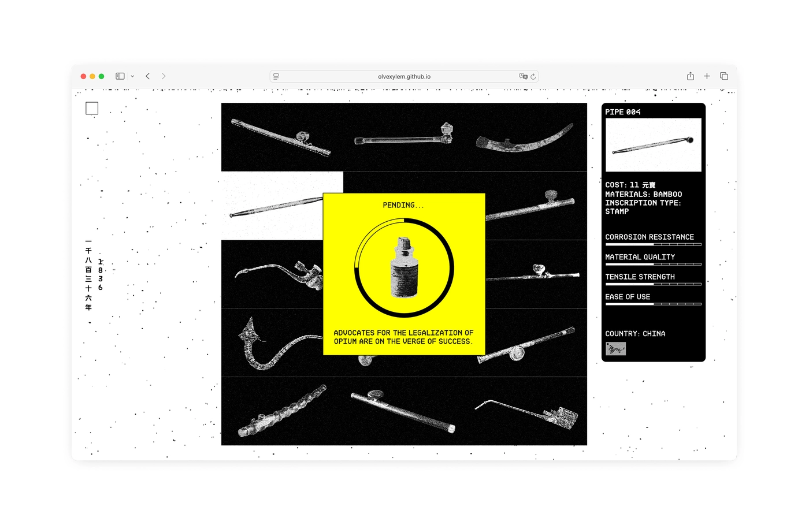
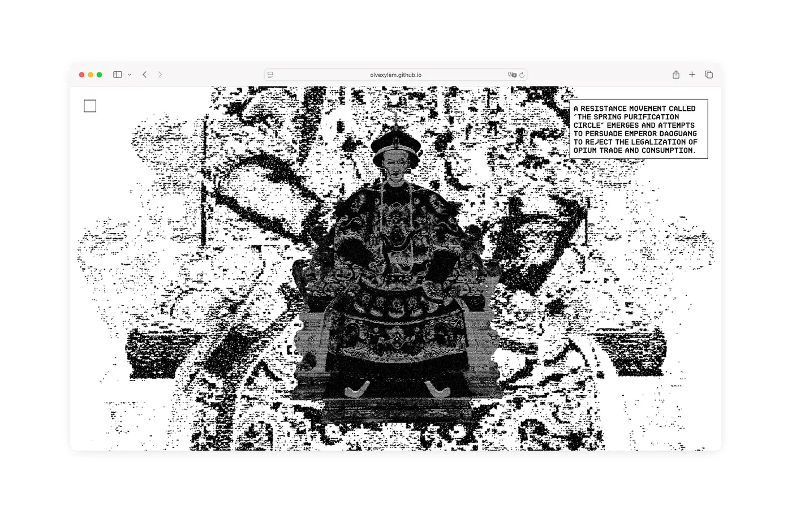
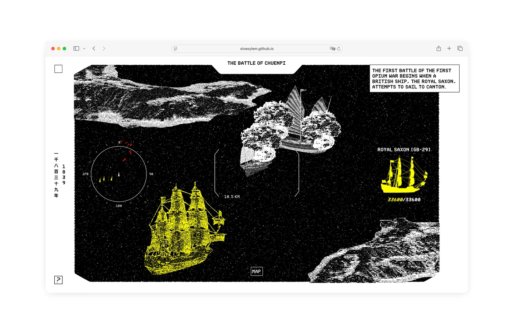
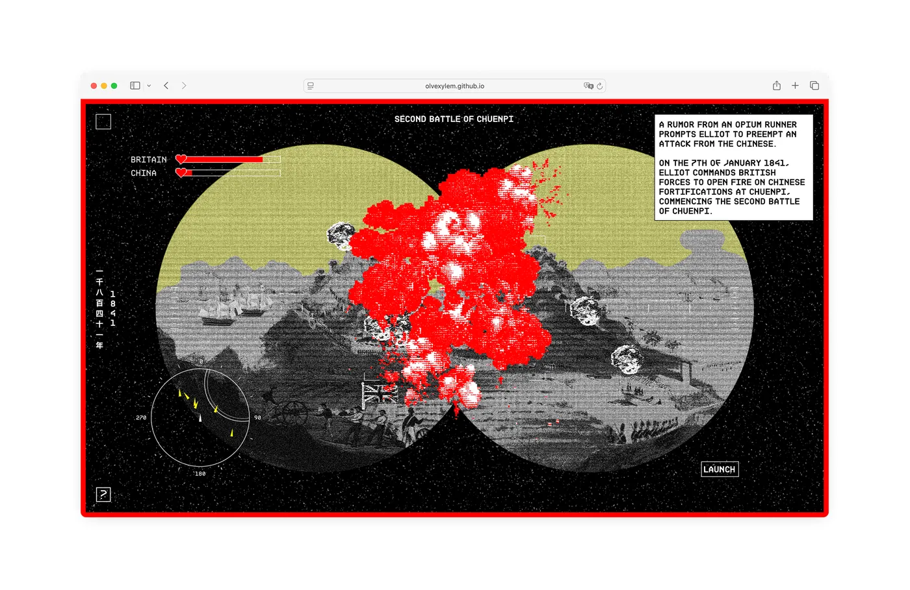
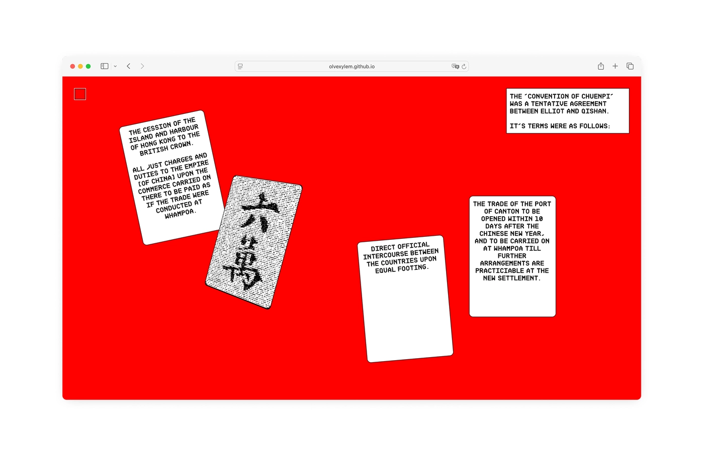